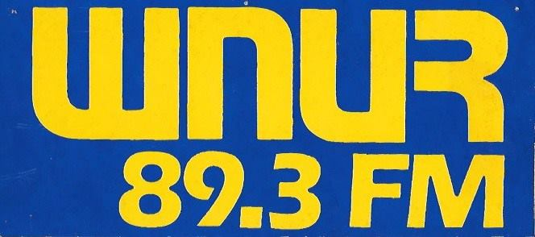
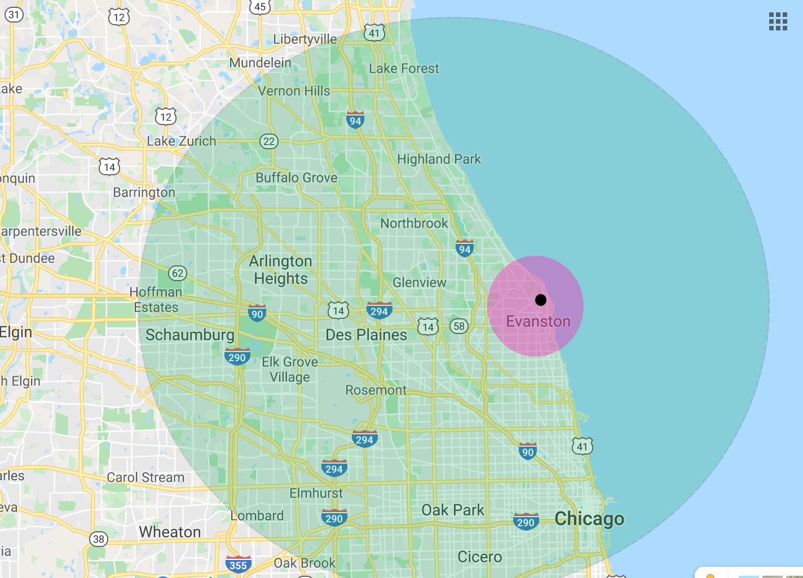
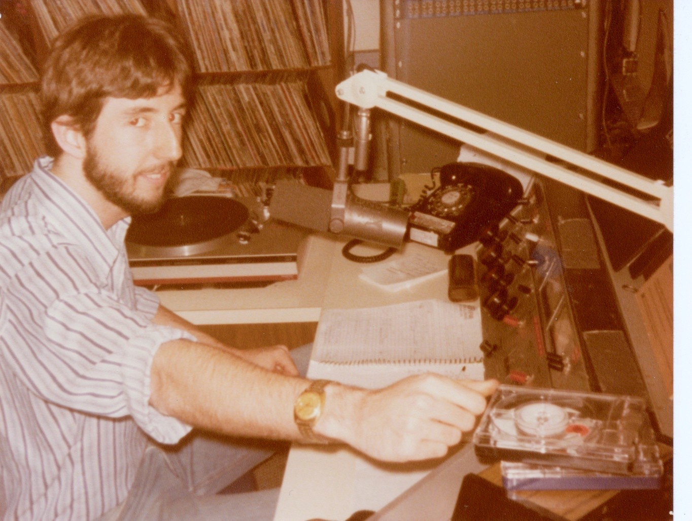
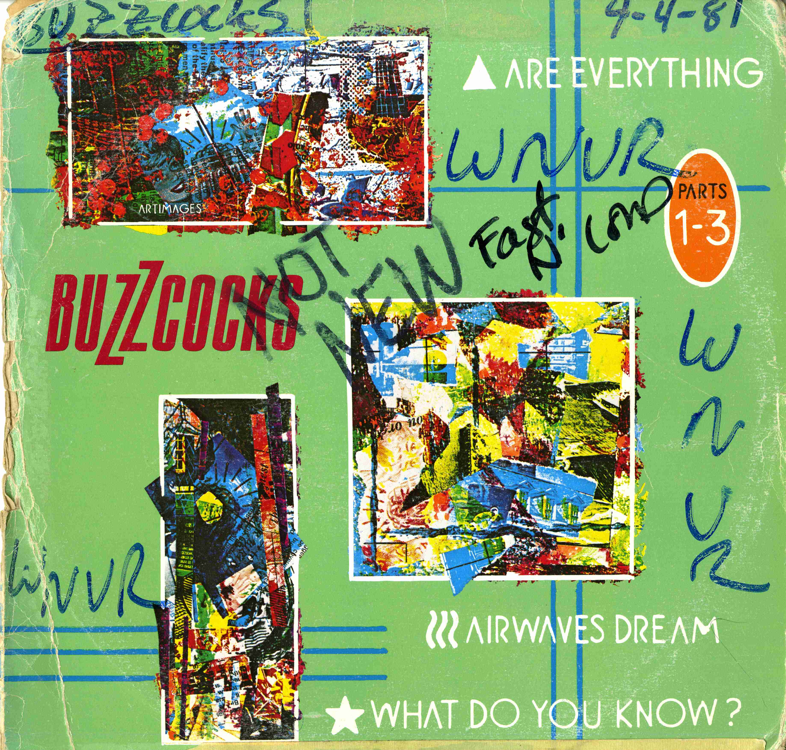
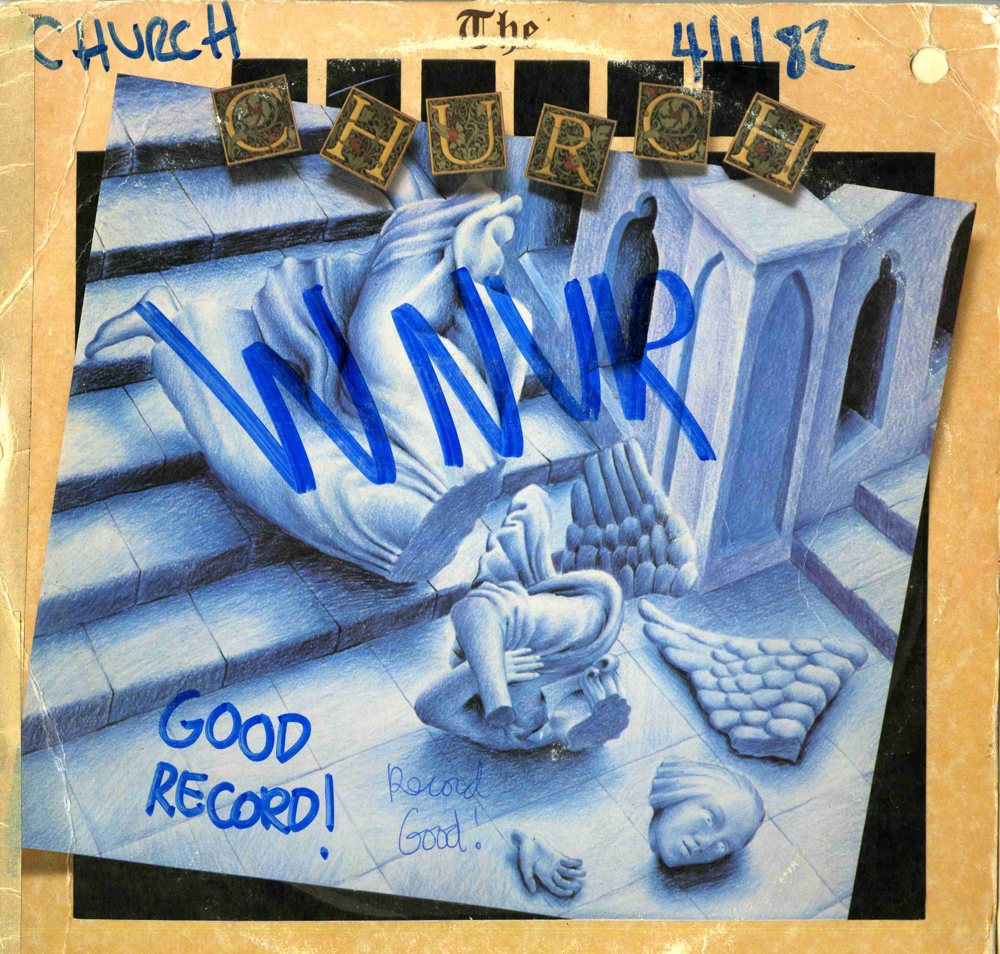
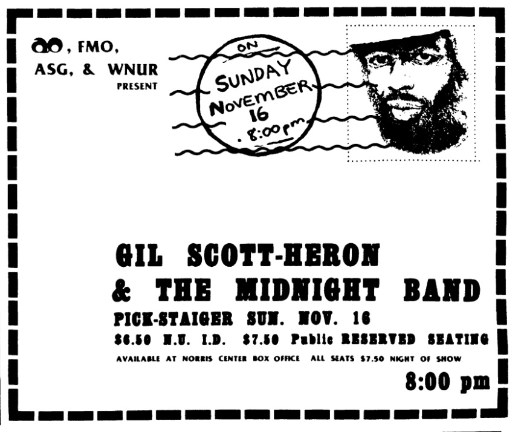
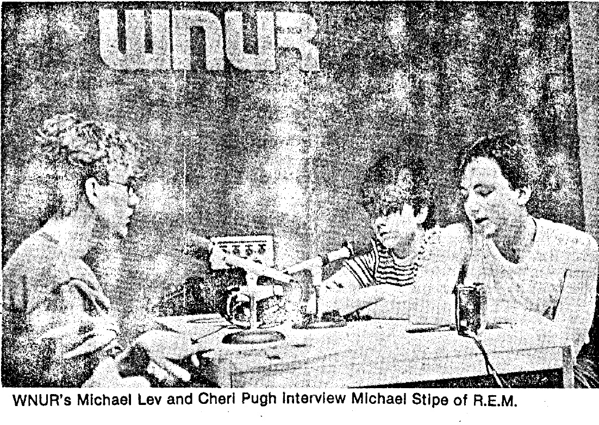
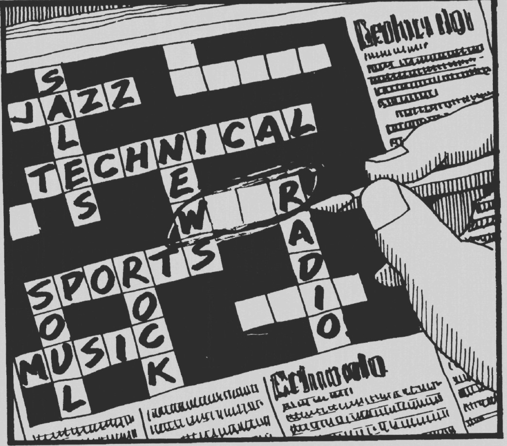
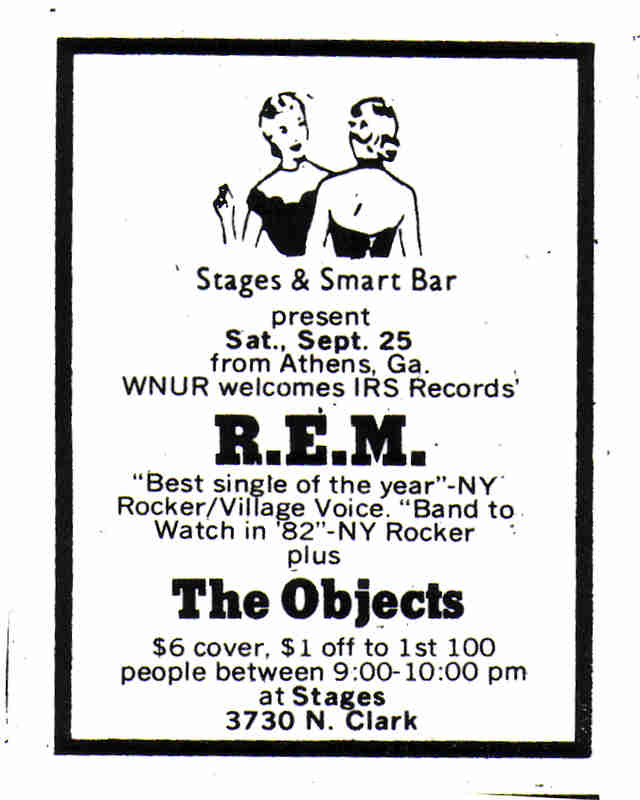

For the first 30 years of its existence, WNUR was a pre-professional college radio station. The station was an institutional outlet of the Medill School of Journalism at Northwestern and mostly served as a training ground for aspiring commercial radio journalists, producers and engineers. The low power signal, which was eventually increased with a 100 watt transmitter in the sixties, served this kind of inward facing radio-as-student-development model as well. This mission worked for the most part -- with many pre-1980 WNUR alumni finding themselves later in positions of power at large media conglomerates and industry bubbles like Arbitron and ClearChannel. The aspirations of these journalism students manifested as you might expect; the station barely reached the city of Chicago and mostly functioned as a place on the dial for Evanston-locals and Northwestern students to turn for local news, Northwestern sports and commercial music programming. As Bob Orlowsky describes, during his arrival on campus in 1978, “the afternoon was lots of blues jams and hard rock and what we at the time would call art rock, which I think everybody now calls prog…and it felt to me almost like the very last gasp of the hippies.”

A few years prior to Orlowsky’s arrival, in 1976, by the work and insistence of primarily one student, WNUR installed a 7200-watt transmitter on top of Leverone Hall. Suddenly, with the flip of a switch, WNUR’s signal reached over 3 million people in the Chicago-land area, stretching into downtown and, if the weather conditions are just right, over the Wisconsin border (I can’t confirm this myth). With this increase in power, there was also an awareness of the responsibilities and potential the “new” WNUR could have in Chicago. But it wasn’t until 1979 that station programming started to change. Between 1979 and 1982, as students of an earlier WNUR era graduated and students whose high school years were marked by the Sex Pistols, the Ramones and the explosion of punk and new-wave music entered, the station radically changed face. This sort of 4-year metamorphosis is the unique lifecycle of a student-run radio station and is a major through-line to understanding the changes and tendencies of WNUR.

Getting Records
In 1980, the changing of the guard was mid-swing and a sophomore Bob Orlowsky had become Rock Show music director inheriting the seventies programming block of Rock Show in the mornings from 6am-2pm: “Scott Byron and I found this dusty Rolodex that had all the record companies, addresses and names with no idea whether any of these people were still alive. And that's the first thing that I had Scott do, was to call these people, or at least call the numbers and find out who was actually in charge of things. So, we got that straightened up pretty quickly and we started actually communicating with the record companies and getting records from them, which didn't seem like people had been doing. But then at the same time, there was so much exciting music coming out that we weren't getting, you know, that was the time when there was all of this stuff coming out in England and it was not coming out here because nobody cared. And so we had to find a way to get all of that. I got the deal with Wax Trax going at the same time that I started the independent music show, Independence Day. You know, I went to Wax Trax and said, ‘look, I've got this show. We have 7,200 Watts. We have this huge range of people that can listen to us. And if you give us some records, you know, I can say thank you, Wax Trax every week and we can play all these things and people would hear them and they will come in and buy them.’ So we got one or two albums and five singles a week from Wax Trax, which was great because stuff was coming in and there was a huge amount of it and there was no way for us to buy it.”

The record store deal Bob describes would eventually grow to include Reckless Records in Chicago, Vintage Vinyl in Evanston and was also aided by a nationwide distribution service called “Rock Pool.” This music, specifically the British imports which were difficult to find outside of a few record stores in Chicago like Wax Trax, would become the meat and potatoes of WNUR’s programming and contributed to the station’s rise in popularity in Chicago. It’s important to understand that many of the records students like Bob were picking up at record stores in the city are ones which would eventually become very popular in the US. Bands like The Smiths, The Jam, Bauhaus, Wire, The Clash, Joy Division, Soft Cell, and even early U2, defined the import catalog and sound of WNUR years before any other radio station in Chicago adapted and caught up to the new music going on in England. While these new groups perhaps defined WNUR on the air for many, Orlowsky points out that at the time people also played other new music like “Bruce Springsteen and The Kinks and you know, Ricky Lee Jones and Prince and Grandmaster Flash. And then we also played old stuff.” It’s important to note that in the age of material, and often expensive or difficult to find music, even having access to these records, was for many of the music-obsessed fans who gathered at WNUR, a huge excitement.
As Mike Lev puts it “I'm 17 years old and a freshman in college in Chicago in the fall of 1980 and I'm a real music freak and an Anglophile and I'd had a subscription to Sounds Magazine when I was a high school senior and now here I am on the radio and I have access to these records that are coming in weekly. So on September 6th the Buzzcocks released, “Are Everything" backed with "Why She's a Girl From The Chain Store" and a week or two weeks later, that single comes in the door at WNUR and I'm holding this brand new record from 6,000 miles away by this band that no one knows and I love and I'm going to get to play it… I can't even explain how exciting that felt.”

The Rock Music Director
It’s important to note here, that while Orlowsky, as music director, felt a responsibility to show new music to DJs and hold their shows to a quality standard, he never felt that he was dictating content requirements to the DJs – to him the music director role was more to make sure the station got records than to decide which of those records went to the stacks. Everything, unless it was “really awful” got put in the stacks and the notes on the covers attempted to draw attention to the what Orlowsky judged as the better stuff. Orlowsky’s music directing vision included what his good friend and subsequent music director, Scott Byron described as an emphasis on “flow:” “the idea was that your show had to flow all your songs had to make sense in context. You couldn't just play records, you had to craft a show.” This style of music directing manifested in Bob sitting down every week with every rock show DJ’s show setlists and going over them, commenting on segments of the show he thought made good radio and giving constructive criticism. This kind of attention to detail and time dedication is something perhaps unimaginable in the current iteration of WNUR and shows the dedication of students at the time to the mission at hand.
While there was a group of students dedicated to the new music like Orlowsky and Irene Innes and Scott Byron, there were also students who played more popular, album-oriented rock like the Doobie Brothers and Styx, maintaining the commercial bent of the station from 70s. As Doug Conn puts it, in 1981 “you were never told when you were in rock show that you couldn’t play a song that was on top forty, but clearly that’s not what the value was at WNUR…people were playing music by bands that were not being played on other radio stations, but weren’t truly local or underground per say, they were the REMs of the world and stuff like that.”

WNUR in Chicago
In addition to playing new, imported music from England on the station and going out of their way to get new records from labels and distribution services, WNUR was also interfacing with the Chicago community in an entirely different way. Steve Jarvis started Airplay in 1979 as a show focusing on and supporting the local music scene. Airplay, which would go on to become a live in-studio performance show continuing to this day, got its humble start simply playing local music and directing people toward local concerts and venues. While this sort of thing may seem common sense for a community radio station now, no radio station in Chicago was offering local music programming at on the same scale as WNUR and in doing so, the station allied itself with local musicians and became the only place to hear their music on the radio.
In addition, WNUR began presenting shows for both local and touring acts in the city at clubs like Metro, C.O.D. and Park West for bands like Gang of Four and The Fall. All of these actions, began to embed WNUR in the scene of the city and radically shifted the mission of the station from an inward-looking place of professional development, to an outward facing and interfacing community organization that just happened to be student-run. For the students, especially those who were unimpressed by the social opportunities a conservative university like Northwestern presented, these interactions with the city became the center of their social lives and gave a purpose to their work at WNUR.

At the same time, there was a community forming within WNUR...
among the students who dedicated endless hours to what Mike Lev says was a feeling of “serving what we thought was a higher purpose, which was to broadcast these bands and these songs that were awesome and so much better than the crap that people at Chicago were still listening to.” And so, for the people who believed in and felt this purpose, WNUR became their life:
Irene Innes (1979 -1983, DJ, Programming Director): “You’d fall asleep on the couch in the cage and just get up the next morning and be there still.”
Bob Orlowsky (1978-1982, DJ, Music Director): “I looked back and I think about the amount of time that I spent there, I can compare it to the amount of time I went to classes. It's kind of a miracle that I actually graduated, but I think that was a common affliction of everybody who really liked to work there…You know, I always had the sense that nobody else had as much time to spend on this as I did. I didn't have the time either, but I was addicted to it. I had no choice. It was like food, you know. So, I was the one who was, you know, putting all those stickers on albums with all these detailed reviews and things. We were having new music meetings, uh, and I was getting as much of the new music as I could find for everybody.”
Mike Lev (1980-1984, DJ, Music Director): “Even though I was a journalism major, I had no real interest or passion for the Daily Northwestern, I spent all my time at the radio station. It was like my fraternity and I met my wife through WNUR and some of my best friends even to today are all because of WNUR. It was everything to us…The first song I played on WNUR was Peter Gabriel's ‘Games Without Frontiers’ and the last song I played was New Order’s ‘Blue Monday’”

Doug Conn (1980-1984, DJ Fast n’ Loud): “I think part of our advantage was we didn’t know what we were doing and we weren’t trying to make money...we would talk constantly about the Rock Show and WNUR”
Glen Sarvady (1980-1984, DJ, Weekend Producer):”Well, I think there are only so many hours in a day and some of it is just pure dumb luck that you get the right people at the right time, and the right music, everything just kind of clicked into place… I was an economics major so I was even further afield from the school of Communication, RTVF, and WNUR was my entire, both extracurricular and social club”
"The Golden Summer"
This is all to say that these motivated and empowered students had a new vision for WNUR as a station more explicitly aligned with the new music they believed in – a vision partially realized in the summer of 1981, known among people of the time as “the golden summer.” Summer is always a unique and often challenging time for the college radio station – how to fill the gaps of the many students who leave town for home or work? During the summer of 1981, a small group of DJs dedicated to “the new music” happened to be the only people from the station on campus or in Chicago. As Glen explains “instead of having fifteen people doing a slot in a given week, five days a week with three slots each, we probably had it down to like four or five or six. And becasue we were all doubling or tripling up there was a little more consistency to the programming too, we got more of a flavor there. At the same time, I think summer time was prime time for touring and more kids were back home from other colleges so I think that was one of the really kind of key periods where everything kind of came together but I think it also set the momentum for what came to happen in 1982 and 83.”

That summer, the most popular song week after week was Soft Cell’s “Tainted Love.” While this song would become undeniably popular in the US, WNUR was playing it only weeks after it’s UK release and a year before it would even break the Billboard Hot 100. Pausing for a moment, “Tainted Love” typifies the kind of “pop-potential” music WNUR was playing in the early 80s that no other station in Chicago was and the kind of music that really got people excited about the station. In light of this, we can demystify any notion that WNUR, or college radio stations in general suddenly, overnight dedicated themselves to obscure, underground, anti-popular music. Incredibly, the incoming general manager, Pierre Bouvard, got word of what was happening at WNUR over the summer and sent a snarky letter to Bob, Irene, Glen and co, that when he arrived in the Fall “WNUR wasn’t going to be playing any more of that ‘crap’ and things were going to change.” (Orlowsky) This sentiment was, in many ways, the last gasp of WNUR’s previous life and the last straw for the progressive DJs. “So we started this campaign, you know, ‘if you like what we're doing write in and tell the general manager or it might not be here in the Fall’…And we got lots of letters and when Fall came around, nothing actually changed. There was a very tense meeting at the beginning where we explained why there were all these letters for them to read and nothing actually changed. And after that Pierre was actually pretty supportive of what went on because I think he realized that the station was doing good work and we were popular and there was recognition for it.” (Orlowsky) Along with the write in campaign there was also a poster designed by mythical WNUR figure (and campus comic maker) Steve Albini.1 This response from the local community and listeners, speaks to the popularity of WNUR at the time and the validation the DJs were receiving from the community. They cared that people were listening and wanted to play music they would like.
Following the Summer of ’81, WNUR rebranded as “The New Music FM” and would institute a Rock Show policy of playing at least 40% new music on every show. Beyond this requirement, there was also an emphasis on playing softer music in the morning between 6am and 9am, again Rock Show was morning programming until 1987. Internally at WNUR, the Rock Show was also popular. New DJs in the early 80s would necessarily have to cut their teeth in the early morning programming called both then and now, Freeform. From there, incoming DJs could apply for a Rock Show or, more likely, apprentice with an established, older Rock Show DJ and build up experience to petition for a show. That being said, if you came in to WNUR willing to work hard and with a requisite love for music, there were no true bars to entry for eventually getting a Rock Show. While rules about what you can and can not play have become more strict over the years, this notion of openness and acceptance is one that continually defines WNUR as an organization in opposition to the norm of exclusive student organizations at Northwestern. This is not to say that WNUR was for everyone, in 1980 it was not and it still is not, but anyone can join at any time and be a part of the organization if they choose to – the culture regulates itself, rather than the people within regulating the culture.

Building on the successes of that Summer, the new focused sound and 24/7 programming by enthusiastic student DJs, the station only grew in popularity: “At least at the time, I don't know if they do now, but Arbitron's radio ratings did not include community and not-for-profit stations. There was a period I think around 82 or 83 where the radio stations in town, particularly the rock radio stations like WXRT really pushed back on Arbitron because they couldn't figure out why their ratings were skewed, they were lower than they were in past. And the only thing that anybody could come up with and I think Arbitron confirmed to some extent, was that this group that wasn't being reported in the ratings, WNUR being one of them, was stealing listeners from commercial radio. Again, not enough to put us in the top five or anything like that but enough to kind of mess up some of the other stations.” (Glen Sarvady) To talk about Arbitron ratings in Chicago, where movements of one or half a point reflect thousands of listeners, is significant and speaks to the real popularity of WNUR. Not only was WNUR reaching a commercial radio-level audience, they were running promotions like working with Polydor Records to send two listeners to L.A. to see The Jam play in 1982 and appearing in Billboard magazine to document the important rise of college radio.
This kind of wide, near mainstream popularity, which I would argue has never been reached by college radio since, was due in large part to the gap that commercial radio could not fill quick enough in the shifting sands of the music industry. Expanding from WNUR, college radio suddenly found itself in the middle of an emerging field of the music industry in which R.E.M. had created mainstream, commercial success out of self-made college radio publicity and independent touring. Suddenly, there were college radio distribution departments at major labels and ‘industry’ publications like College Music Journal. Much of this would also inform the national syndication of MTV and other emerging exploitations of underground culture and economies from corporate America. This attention toward the underground and college radio was also not entirely ignored as Mike Lev outlines “the two record companies most aggressively courting us [in 1982] were CBS and Electra and they also happened to be the two worst. And they would call, I had to take these phone calls from these guys in Europe and would have to delicately maneuver the conversation because there were still things they were putting out we perhaps wanted.” So there was a semblance of partnership between major labels and WNUR, but also an active resistance. And as commercial radio began to catch on to New Wave and the bands WNUR championed in the 1981 and 1982 how would the station and scene respond? By digging deeper underground.